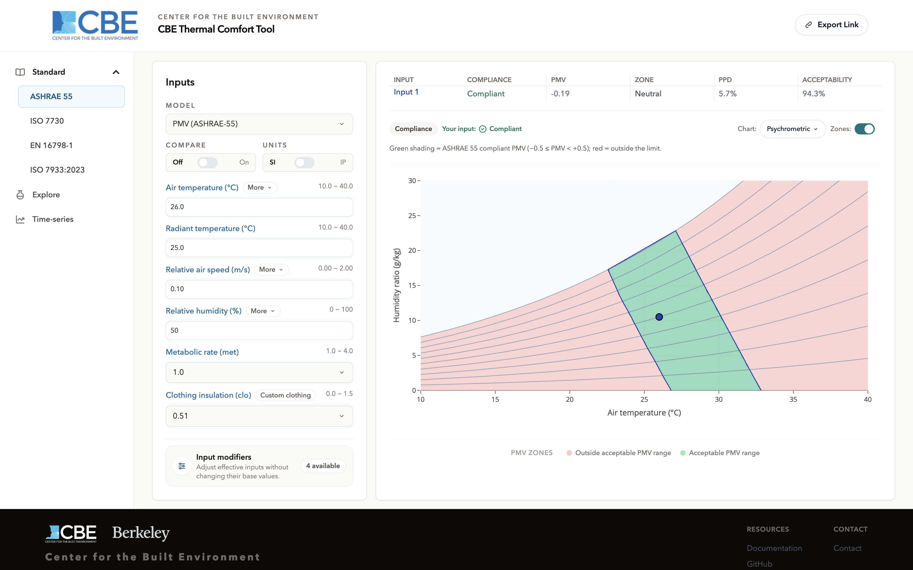

CBE Thermal Comfort Tool
CBE Thermal Comfort Tool
A browser-based calculator for thermal comfort and heat-stress models.
Every calculation runs locally in your browser through the
jsthermalcomfort engine nothing is uploaded,
and no account is needed.
The tool is organised into six workspaces. Four are compliance workspaces, one for each standard the tool implements; the other two are Explore, for open-ended investigation, and Time-series, for exposure over time.

The six workspaces
| Workspace | URL | What it is for |
|---|---|---|
| ASHRAE 55 |
/standard/ashrae-55/
|
PMV/PPD and Adaptive comfort against ASHRAE Standard 55 |
| ISO 7730 | /standard/iso-7730/ |
PMV/PPD against ISO 7730 |
| EN 16798-1 | /standard/en-16798-1/ |
Adaptive comfort against EN 16798-1 |
| ISO 7933:2023 | /standard/iso-7933/ |
Predicted Heat Strain for hot working environments |
| Explore |
/explore/
|
Any model, selectable chart axes, editable comfort bands |
| Time-series |
/time-series/
|
Heat strain over a sequence of exposure segments |
A workspace URL takes an optional model segment
/standard/ashrae-55/pmv-ashrae/,
/explore/utci/
so a link can point at an exact model,
not just a workspace.
The nine models
| Model | Compliance workspace | Explore | Time-series |
|---|---|---|---|
| PMV / PPD (ASHRAE 55) | ASHRAE 55 | Yes | |
| PMV / PPD (ISO 7730) | ISO 7730 | Yes | |
| Adaptive comfort (ASHRAE 55) | ASHRAE 55 | ||
| Adaptive comfort (EN 16798-1) | EN 16798-1 | ||
| PHS (ISO 7933:2023) | ISO 7933:2023 | Yes | Yes |
| UTCI | Yes | ||
| Heat Index | Yes | ||
| Humidex | Yes | ||
| Wind Chill | Yes |
The two Adaptive models are deliberately
not
available in Explore.
Their comfort bands are defined by the standard
as a function of outdoor temperature,
so an editable-band workspace would misrepresent them.
Where to start
- Main interface the parts of the screen and what each one does.
- Input modifiers the four optional adjustments that change an input before the model sees it.
- Explore what it does that a compliance workspace deliberately will not.